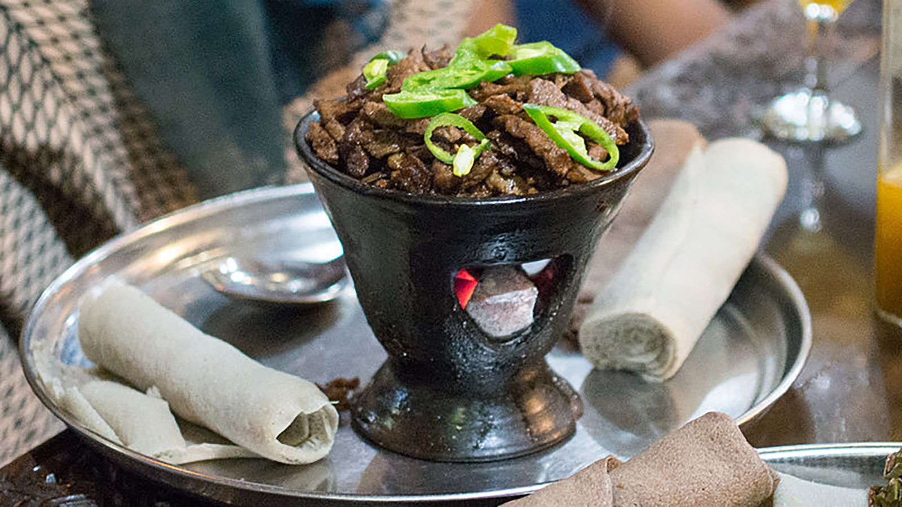

Tibs is a popular Ethiopian dish made with pieces of beef or lamb sautéed with onions, tomatoes, peppers, and aromatic Ethiopian spices. The meat is cooked until tender and flavorful, sometimes with a little butter to enhance its taste. Tibs is often served hot with injera and is enjoyed during family gatherings, celebrations, and special occasions.